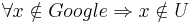

De: La Frikipedia, la enciclopedia extremadamente seria.
De: La Frikipedia, la enciclopedia extremadamente seria. De: La Frikipedia, la enciclopedia extremadamente seria.
Es un teorema que nos demuestra que si no aparecemos en google, no existimos.
También llamado Identidad de Guugel, es un simple teorema que dice lo siguiente:
Un sujeto , pertenece al conjunto universo (existe), si y sólo si aparece en Google.
De lo cual deducimos lo siguiente:

Todos los sujetos que no aparecen en Google, es que no existen.
Con lo cual, si usted busca su nombre en google, y no lo encuentra, eso quiere decir que no existe. Eso quiere decir, que se despertará en cualquier momento de esta pesadilla, y se encontrará en un planeta formado por antimateria, y 5 segundos después el universo en el que se encuentra se plegará sobre sí mismo antes de destruirse por completo y darle paso a permanecer en la nada durante toda la eternidad, hasta que a alguien se le ocurra introducir su nombre en el sistema de Google.
Este teorema, o bién identidad, se demuestra de tal manera que, según el artículo de Google, cito textualmente, dice que:
"Su buscador busca de todo y encuentra hasta lo que no buscas."
Entonces, si el buscador encuentra hasta lo que no buscas, es que lo encuentra todo, y si no encuentra algo, es que no existe.
Autor(es):